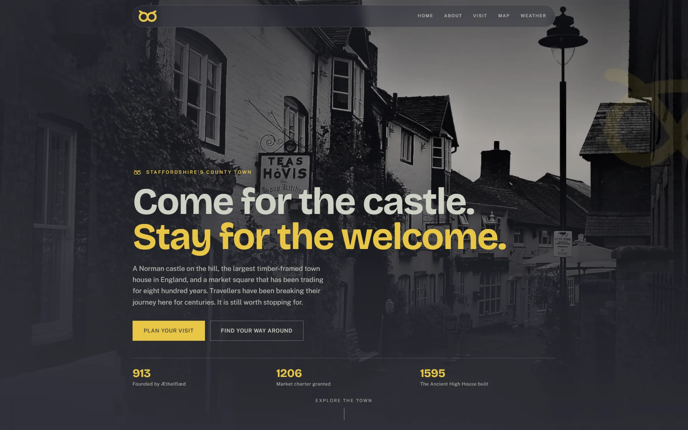
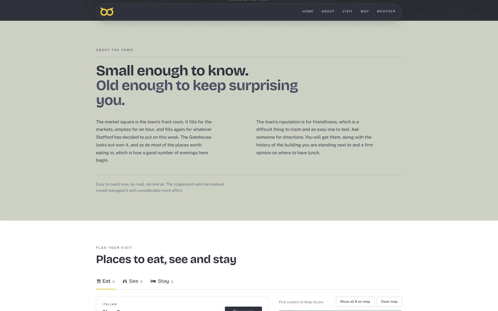
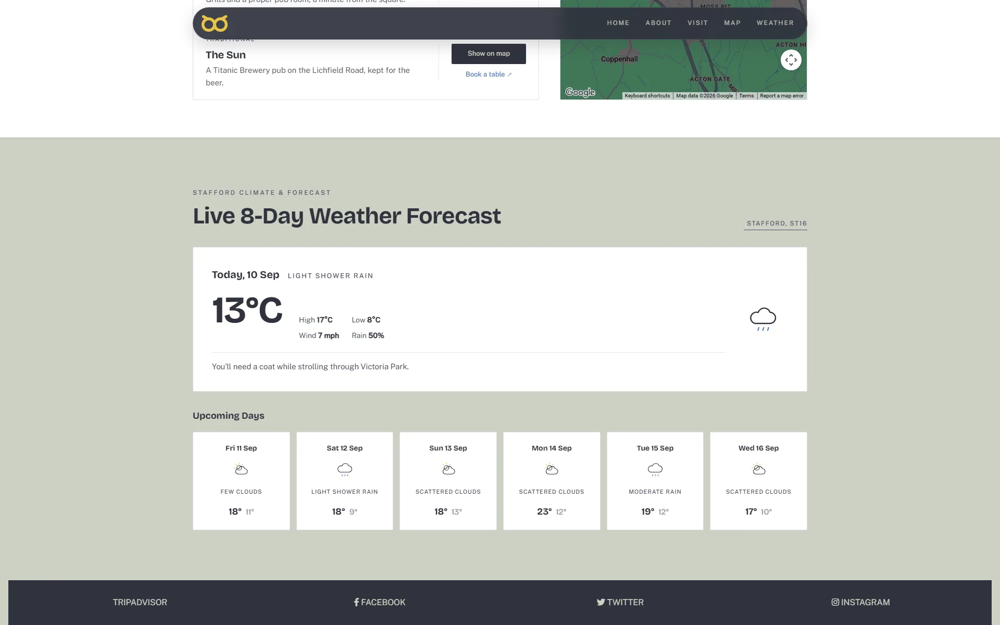
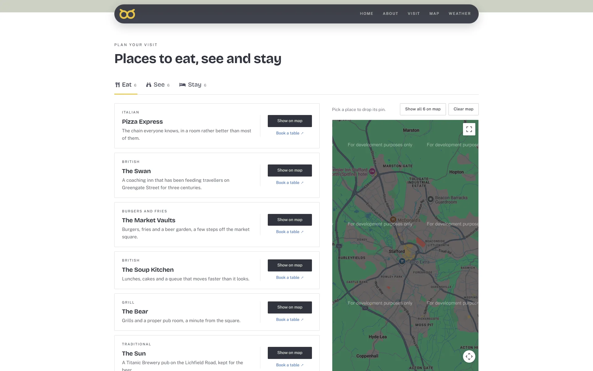
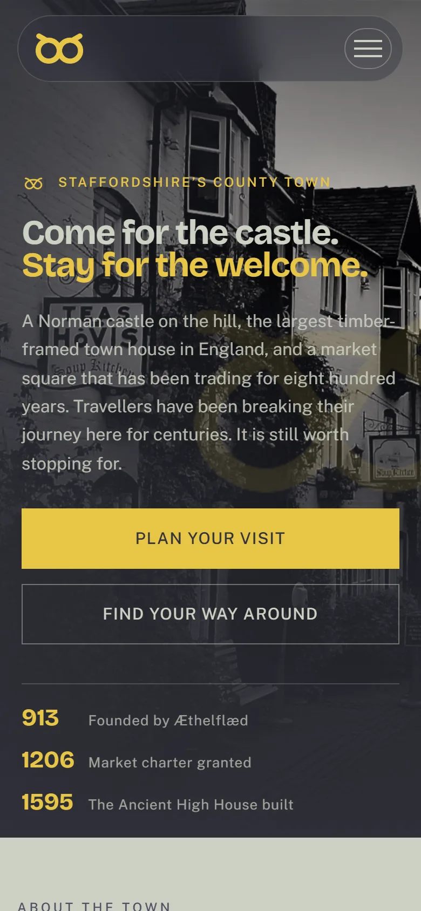
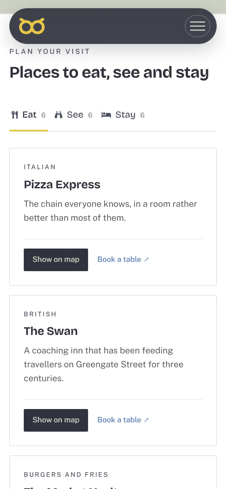
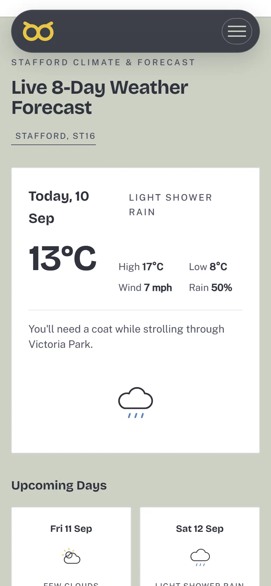

Case
Visit Stafford
A front door for the town of Stafford.
Project
Visit Stafford
Design & Build
8 weeks
Web Design
Preview

Overview
The brief
A whole town of places, events and history, with nowhere that held it all. Visit Stafford became the front door.
The challenge was breadth without clutter. Locals, visitors and organisers all needed different things, mostly on a phone.
On screen
The site, up close
One scrolling page: the hook, the town, the places, the weather. Everything a visitor needs.
Full page

Desktop


Places

Mobile



The challenge
What was in the way
Looking at how the town was represented online set the priorities:
- Information scattered across social pages, PDFs and word of mouth, with no single place that answered for the town.
- Nothing answered the visitor’s simplest question on arrival: what is on today?
- Local businesses had no easy way to be found or featured alongside the town’s own attractions.
The approach
How we got there
-
Content architecture
The town’s content organised into see, do, eat, stay and what’s on, so every visitor question has an obvious place to land.
-
Mobile-first, on the go
Designed for someone standing in the town centre asking what’s near me, not for a desk browser first and a phone as an afterthought.
-
A live forecast, not a static page
Real weather data pulled straight onto the homepage, since the honest answer to “is it worth the trip today” changes hour to hour.
-
Room for every business
Listing templates that make the smallest café look as good as the biggest venue, so the town’s smaller businesses get the same shot at being found.
The outcome
What shipped
A front door for the town that answers a visitor’s questions on the day, not just a brochure of what Stafford used to look like.
Designed and built by me, from content architecture through to the live weather integration.
Next
Get in touch